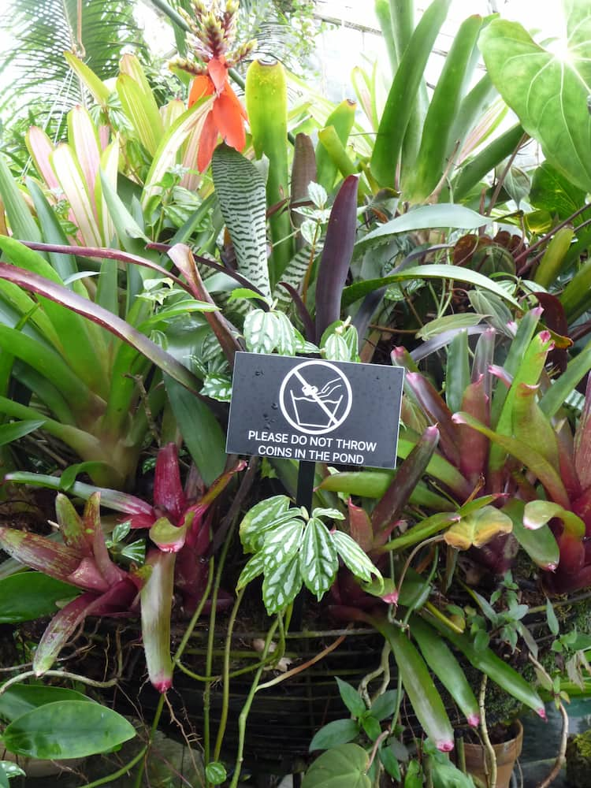

2023_iceland/ (13 items)
2023_san-francisco/ (54 items)
2023_sf-fleet-week/ (12 items)
2024_greenery/ (60 items)
2024_greenery-2/ (43 items)
2024_greenery-3/ (25 items)
2025-02-14_central-basin/ (5 items)
2025-02-16_chinatown/ (8 items)
LICENSE (1.07kB)

about.md (1.02kB)
kevin.garden is my personal file gallery, currently fixated on my photos.
kevin.garden is a mirror of the underlying directory that hosts it. html pages
are created by a script (cultivate.js) that visits every file and parses their
file coordinates within the finder directory using data found in macOS's
.DS_Store file. here, .DS_Store is a file that is finally esteemed.
view—and feel free to fork—the source code at github.com/inchkev/garden.
the repository paratactically hosts my personal kevin.garden, viewable
here, with the files and code that host and generate it. the .gardenignore
denylist prevents files such as .gitignore and node_modules/ from
being shown.
kevin.garden lays almost everything bare: src/ contains the source code,
and views/ the .ejs templates that define the .htmls.
by kevin chen.
birds/ (17 items)
bunney.md (44B)
(\(\
( -.-)
o_(")(")
– Chia
changelog.md (364B)
- 4/12/24: add text-size-adjust (and webkit equiv)
- 4/8/24: for markdown files,
- display file size
- add
mdclass to divs, add margins to inner tags
- 10/17/23: added gray border around items
- 10/9/23: added max recursion depth argument, defaults to 3
- 10/6/23: you can
node cultivate.js DIRnow!- just be very careful what directory you specify...
conservatory_of_flowers.jpg (113kB)
{kind=link}
favicon.png (1.66kB)
{kind=link}
fujifilm
garden-ideas.txt (1.27kB)
kevin dot garden
mostly photos
last updated
02/10/2025
lumix
misc
notes/ (2 items)
philosophy
photo of the week
photos
picnics/ (6 items)
previous-versions/ (22 items)
src/ (2 items)
todo.md (297B)
improve vertical centeringit's good enoughadd markdown/rich text support- fix div ordering
make cultivate take in an arg to an arbitrary directory- add a dry run flag
- warn if too many index.htmls potentially generated
- release garden to the world
- kevin.garden party